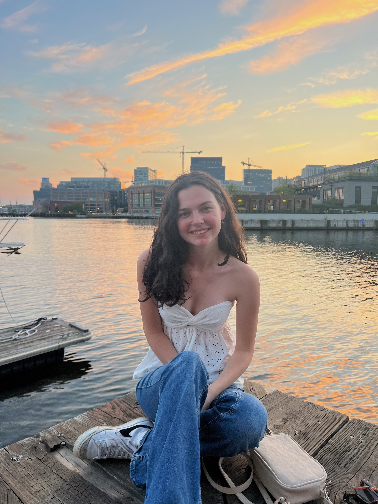

I'm a recent journalism graduate from the University of Maryland's Philip Merrill College of Journalism with experience in reporting, editing, data journalism and strategic communications.
Throughout my academic and professional experiences, I've developed a strong passion for writing, editing and project management while creating content for news organizations, university departments and digital audiences. My work has appeared in publications including Capital News Service, The Alexandria Times and Stories Beneath the Shell.
Beyond journalism, I've gained experience in communications, fundraising support, donor relations and administrative operations, giving me a well-rounded perspective on how different organizations connect with their communities. I'm currently seeking opportunities in journalism, communications, public relations and related fields where I can contribute my writing, organizational and creative problem-solving skills.